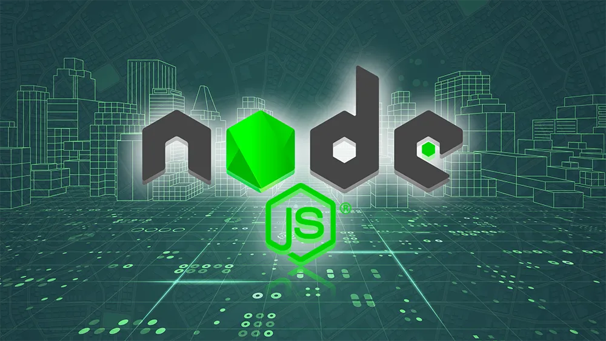

Reengenharia e Evolução de API NodeJS
Em novembro de 2021, de forma proativa e fora do expediente regular, idealizei, planejei e executei a reestruturação completa de uma API NodeJS em uso pela One Portaria. Essa API havia sido desenvolvida inicialmente como substituição ao backend em PHP, mas sem arquitetura ou padrões que permitissem escalabilidade e manutenção a longo prazo. Ao identificar esse risco estrutural, tomei a iniciativa de propor e implementar melhorias profundas, com foco em engenharia de software, escalabilidade, performance e boas práticas arquiteturais.
Minhas Atividades e Responsabilidades
- Atuação 100% autônoma, desde a identificação do problema até a execução e finalização do projeto.
- Análise crítica da estrutura existente e planejamento arquitetural de uma nova base sólida e escalável.
- Refatoração de código, separação de responsabilidades, padronização de rotas, middlewares e organização modular do projeto.
- Implementação de práticas modernas de desenvolvimento, como camadas de serviço, repositórios, uso adequado de middlewares e controle de dependências.
- Apresentação técnica das melhorias ao CEO e ao time sênior da empresa, obtendo validação, aprovação e elogios pela iniciativa.
Resultados e Impacto na Empresa:
- A nova API tornou-se a principal base backend da empresa, sendo utilizada como padrão desde 2021.
- Milhares de novas funcionalidades e dois novos sistemas carro-chefe da empresa foram desenvolvidos com base nessa estrutura.
- A arquitetura implantada foi replicada em pelo menos 3 outras APIs NodeJS dentro da empresa, consolidando-se como referência interna de boas práticas.
- Eliminação gradual da dependência do legado em PHP, promovendo uma transição tecnológica robusta e sustentável.
Diferenciais Técnicos:
- Projeto executado com visão de longo prazo, focado em sustentabilidade técnica e organizacional.
- Uso de boas práticas de engenharia de software, sem impacto negativo na operação, com ganho expressivo em manutenibilidade e organização do código.
- Capacidade de atuar estrategicamente, mesmo sem demanda formal ou solicitação hierárquica, demonstrando proatividade e visão sistêmica.
Benefícios Estratégicos para a Empresa:
- Redução significativa de riscos técnicos associados à evolução de sistemas.
- Ganho de velocidade no desenvolvimento de novos produtos.
- Melhoria da performance, confiabilidade e estruturação dos projetos da empresa.
←Voltar ao portfólio